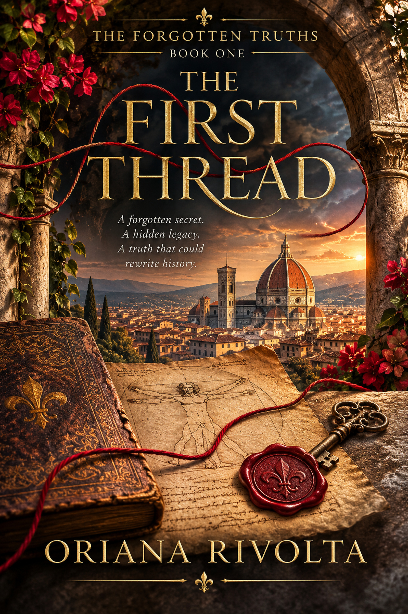
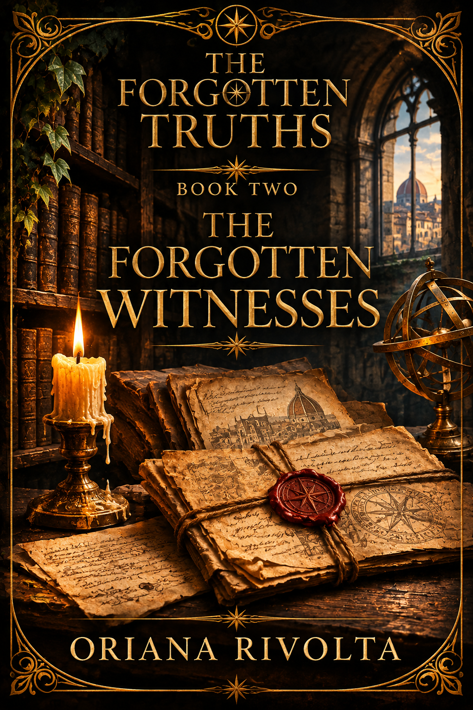

BOOK ONE
WELCOME TO THE MIDNIGHT LIBRARY
ORIANA RIVOLTA
History remembers the powerful.
I write about those it forgot.
Enter a world of forgotten voices, buried secrets, and histories waiting to be questioned.
EST. 2026
✦
EVERY TRUTH BEGINS SOMEWHERE
BEYOND THE WRITTEN RECORD
What if history was only half the story?
✦
Every age leaves behind its stories. But not every story survives.
History is filled with extraordinary people, unanswered questions, forgotten voices and events remembered from only one perspective.
Through historical fiction, Oriana Rivolta explores the spaces between documented history and the possibilities imagination allows.
What if everything you thought you knew was only the beginning?

THE FORGOTTEN TRUTHS · BOOK ONE
THE DEBUT NOVEL
Some secrets were never meant to survive.
THE FIRST THREAD
In a city where history is preserved in fragile records and guarded memories, Lucia Rossi is drawn into a mystery where the truth may be more dangerous than the silence surrounding it.
The first novel in The Forgotten Truths, a four-book historical mystery series exploring forgotten histories, hidden connections and the stories that survive across generations.
Published on Amazon
Discover The First Thread
FOUR BOOKS · ONE HISTORICAL MYSTERY
The Forgotten Truths
✦
Every book reveals another thread.
Follow the mysteries through four connected novels, from the first discovery to the final unravelling.

BOOK TWO
The Forgotten Witnesses
Forthcoming
BOOK THREE
The Ninth Testament
Forthcoming
BOOK FOUR
The Unravelling
ForthcomingBEHIND EVERY STORY
The past is waiting to be discovered.
The final page should never be the end of your curiosity.
What History Records
Discover the people, places and genuine historical events behind the novels.
What Remains Unknown
Explore disputed accounts, lost records and mysteries still waiting for answers.
The Rabbit Hole
Follow questions beyond the fiction and investigate history from new perspectives.